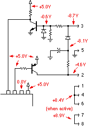

OBD Circuit Construction Tips
The following tips are a result of the many technical support questions that have been asked about using our OBD Interpreters. If you are having trouble, then there is likely an answer here. Note that this section deals with OBD related help only - be sure to also see our other Construction Tips (help > tips) section for general circuit help.
Components & Design Choices
Circuit Boards
Where can I buy a circuit board for my ELM IC?
If making your own pcb, we can help get you started for the ELM327 only. We've posted some of the design information for our (3"x4" single-sided) demonstration board that was used for the original beta testing:
ELM327 Demonstration Board
Here are the supporting files for you to download:
- The schematic (Figure 9 from the original data sheet)
- Some info on connections and jumpers
- PDF versions of the foil and silkscreen patterns:
- Gerber files (.zip) to have the 3"x4" boards made for you
You are free to use these files as you wish, but Elm Electronics Inc. makes no claims, and offers no guarantees as to the circuits' performance.
Another option has been provided by Bart Kuijper. He has created an Eagle printed circuit board project for the ELM327 and placed it up on GitHub to share. It’s for a Bluetooth interface, but even if that is not what you want, he’s done 98% of the work for you. Have a look at https://github.com/Spartelfant/ELM327-BT
Parts
I can not find a 0.3" wide 28 pin socket. Can you help?
My OBD cable uses pin 2 for common, but I see that your demo board uses pin 1. Is that OK?
Where do I get a male J1962 connector?
For complete cables, you may wish to try OBD2Cables, ScanTool.net, B&B Electronics, and Multiplex Engineering. There are others - just Search the web for J1962 OBD cable vendors.
Your other OBD ICs use a 3.58 MHz crystal. Can I use that frequency for the ELM327 as well?
Do I have to use a Microchip MCP2551 transceiver chip with the ELM327?
Connectivity - RS232, Bluetooth, etc.
Can I use a MAX232 IC for the RS232 interface?

Note that the ELM327 does not need to have its Rx input inverted, as it uses standard (high at idle) levels. If you wish to use a MAX232 with the ELM327, simply connect the IC as follows:
I would like to connect directly to my microprocessor. Can I do that?
The RS232 Receive inputs on the ELM320, 322, and 323 are inverted from what they should be (for a standard RS232 interface), so to correct for that you need to add another inverter. If you have a spare one on your circuit board, then use it. If you do not have an inverter, you can make one. A simple circuit such as this will work well:

This one transistor circuit is placed between your microprocessor transmit output, and the ELM IC's receive input to invert the signal for you. Your microprocessor receive input can be connected directly to the ELM's transmit, and your RS232 is all set. Note that the circuits must all be powered by the same supply (so that you don't try to backfeed through the protection diodes).
The ELM327 does not need to have its' Rx input inverted, as it uses conventional levels at both of the RS232 pins - see the 'Microprocessor Interfaces' section of the ELM327 data sheet for more information.
I want to use my PDA to talk to my vehicle, how do I do this?
We can't possibly provide advice on all of the devices out there, but we can get you started by showing how to use some of the very popular Palm series of handhelds.
Many of the early Palm models (M100, etc.) used a serial port connection for HotSyncing. You can use the HotSync cable that was supplied with these Palms to talk to your vehicle.
Newer Palms (Tungstens, etc) use a USB connection for HotSyncing. What to do with them? Well, it turns out that many of them have both USB and RS232 available at their 16 pin "Universal Connector". For these devices, you will only need to purchase Palm's "HotSync Cable-Serial" (part number P10804U). When you connect this cable, you will then have a standard looking 9 pin (F) connector coming from your Palm.
Now that you have this 9 pin (F) connector coming from your Palm, you need to connect to it. This is not as difficult as many would think, as Palm has followed convention so that their devices can be easily connected to any PC. They have made the connection so that the Palm appears as a modem (DCE) device. The ELM IC is expecting to be talking to a PC however, so in order change how the Palm appears, you will need to reverse the wires to it.
This is done by either putting a "null modem" cable between your ELM IC and your PDA, or by using a standard cable and a "null modem adapter" at one end of the cable. If you wish to make your own "null modem" cable, it's not very difficult. All that you really need is:
Null Modem Cable
Having made the connection, you will now need software. There are several terminal programs available for the Palm - take your pick. We use the free and very stable "ptelnet" here at ELM. It will log your sessions to a memo, and the one really good feature that we enjoy is its ability to assign macros (up to 12) to menu items so you don't need to remember those commands. Here a few macros that we use:
Don't forget to turn the serial port on and off using the 'On' box in the bottom left corner of the screen. It seems that some of the earlier models needed the port turned on and off manually, and if left on, they would continue to use battery power even if the Palm was off. We think that Márcio Migueletto de Andrade has provided a nice product here. If you think so too, don't forget to tell him.
I would like to connect to my ELM327 circuit using Bluetooth. Can this be done?

Testing & Troubleshooting
Initial Tests
I'd prefer to not connect my OBD board to my vehicle for initial testing. Can I test it on the bench?
My circuit doesn't work, and I'm not sure where to start troubleshooting. Is there anything with typical voltages on it that I can use to narrow down the location of the problem?
We do not have anything similar for the other chips at this time, but the next section (Connecting to a PC) does have some typical voltages for the RS232 circuitry.
My ELM327 circuit is acting strangely. All I have connected is the ISO 9141 circuitry, and I've checked the wiring many times. Is the chip bad? What next?
It sounds like you may have a floating input. Check all of your pin connections to be sure that every input is terminated. (Pins designated as outputs can be left open-circuited.)
I can see pulses going out and in, but the ELM IC says NO DATA.
I've removed my test equipment, but the ELM IC still says NO DATA.
I can see pulses going out, and my car still won't talk to me. What next?
- You may have selected the wrong interface standard for your vehicle. There are no guarantees that your vehicle uses the standard that is generally attributed to it. For example, much of the literature states that Daimler Chrysler vehicles use the ISO standard, and while many do, as of the MY2000 many of them started to use the J1850 VPW standard. Check with your manufacturer to be sure.
- In line with the above, we once had a person who carefully built an ELM320 circuit only to find that it did not talk to his diesel powered vehicle. We tried everything, and he ended up putting it on the shelf. Eventually though, he tried it on a gasoline engine version of the same vehicle and the circuit worked. Always verify the standard used by your vehicle if you can not communicate with it.
- You may have a wiring error. These occasionally become more obvious after taking a break (why not put this down for a day or two and then come back to it?).
- You may have a component error. Be careful with substitition of component values. For example, changing the 4.7K resistor on pin 4 of an ELM320 circuit to a 47K resistor, will almost guarantee failure (as the R-C time constant will change, altering signal pulse widths).
- Check that your ignition switch is turned fully on. Even though there is 12V at the interface, most ECUs will not respond unless the ignition is on. We've all made this mistake more than once!
Connecting to a PC
I've connected the RS232 but get nothing from my ELM IC. What should I do now?
Some of the ELM RS232 Example Applications show RS232 connections for an older style 25 pin connector. This connection was very common for external modems and other computer peripherals, but is now almost extinct. Be sure that you are using the correct pinouts for the type of connector that you are using. Here is a pin cross-reference for you:
| Function | DB25 | DB9 |
|---|---|---|
| Transmit Data (from PC) | 2 | 3 |
| Receive Data (to PC) | 3 | 2 |
| Request to Send (from PC) | 4 | 7 |
| Clear to Send (to PC) | 5 | 8 |
| DCE Ready (to PC) | 6 | 6 |
| Signal Ground | 7 | 5 |
| Data Carrier Detect (to PC) | 8 | 1 |
| DTE Ready (from PC) | 20 | 4 |
| Ring Indicator (to PC) | 22 | 9 |
If you are sure that you have connected the correct pins (there should be a tiny little number beside the pins), then perhaps you have a component problem. The following shows the typical voltages that you should see in your ELM320, ELM322, or ELM323 circuit - simply compare them to what you measure:

The Example Application for the ELM327 shows a slightly different circuit. Here are typical voltages that you might measure with the ELM327 circuit:

If you have a multimeter available (you should if you're building an electronic circuit) then connect it with the negative lead to circuit common and probe around this circuit. The typical voltages that you would expect (if all connections are correct) are shown in red in the above diagrams. Don't worry if your voltage is a little different as each computer is a little different - it is the relative magnitude and the polarity of the voltage that is important. Any significant differences need to be checked, as the different voltage might be caused by a component problem.
Several people have pointed out that for the ELM320, ELM322, and ELM323, the Rx pin actually sits at a negative voltage. Since voltages less than Vss are not recommended for an IC, people were worried that damage might result. Actually, it is not recommended if there is no means of limiting the current through the input pin (as it could cause a problem known as 'latchup'). In this case a large series resistor limits the current to a safe level, so the -0.5V measured is quite acceptable.
I've connected the RS232 but get random characters from my ELM IC. What should I do now?
ELM327 v1.3a
>If your terminal software baud rate is set too low, you will see a shorter message, typically like this:
å°¸and if your terminal software baud rate is set too high, the message will appear longer than it should, typically like this:
xÄxxÄxxxÄx-ÄxÄÄÄÄÄ--ÄÄÄ-xÄÄx ÄÄÄxx-ÄxxÄxÄÄThe ELM ICs normally use 9600 baud or 38400 baud, so if you have set your software to one of these, then try the other.
I see the powerup message, but I get nothing when I send commands.
If you do not, there may be a few reasons:
- The fact that you see the powerup message says that the IC is functioning, your baud rate is correct, and the transmit wire from the ELM IC to the PC Rx input is correct.
- The common wire from the ELM circuit to the PC's RS232 port may be incorrect. Check that the two are properly referenced to each other (you must connect common to pin 5 on a 9 pin connector, or to pin 7 on a 25 pin connector)
- Make sure you do not have any handshaking selected. Your PC may be waiting for a signal that the ELM IC is ready to receive data, and this will never happen. No hardware handshaking, no XOn XOff handshaking. Don't worry, almost any PC ever made should be able to handle 9600 baud.
- Your system may not allow you to avoid handshaking entirely. Some RS232 ports (or USB adapters) require signals such as Carrier Detect (DCD) and DCE Ready (DSR) to be asserted before they will function properly. If you have one of these, you will have to add jumpers between some of your RS232 pins. For 25 pin systems, short pins 6, 8, and 20 to each other, and also connect pin 4 to pin 5. If you have a 9 pin connector, short pins 1, 4, and 6 to each other, and then short pin 7 to pin 8.
- Check your wiring again to the ELM IC's receive input. The ELM IC can talk to your PC or PDA, but is not seeing your commands, so something is likely wrong with the components between the PC and the ELM IC. Note that the input is inverted, so if you have deviated from the Example Application, you may have to add an extra inversion to compensate.
I have built the circuit, and am testing it on an Ozen Elektronik ISO 9142 ECU simulator. All I get is 'UNABLE TO CONNECT' - why?
In order to connect to the Ozen simulator, either add time (make PP13 > BC) or use an ELM327 v1.4b IC.
Talking to a Vehicle
What software do I need in order to talk to my ELM IC?
Here are some examples of terminal programs:
Macintosh
- goSerial by Andreas Mayer is a nice bit of free software. It provides a simple terminal interface, that automatically logs your sessions for you.
- ZTerm by Dave Alverson has been the standard shareware program for years. It's available for Mac OS X, as well as the older systems 8 and 9.
Windows 95, 98, XP
- The older Windows systems have a free terminal program included - "HyperTerminal" by Hilgraeve Inc./Microsoft. It's a good one to start with, if you're trying to do some basic testing.
- Terminal 1.9b by Bray is a great little free program if you can find it. For some reason, it's disappeared off the net recently.
- RealTerm is another great free program that is certainly worth a try.
- VBHexTerm by Chris Schroeder is another great little free program. It allows you to transmit actual binary data which may handy (but not for the ELM interfaces - they only need ASCII).
- Tera Term Pro by T. Teranishi is yet another free program. It hasn't been updated for a while, but should still work fine on many systems.
- If that version of Tera Term seems a little outdated, you may want to try the SourceForge TeraTerm Project. The software is open source, costs nothing, and seems to be kept fairly current - certainly worth a try.
- One other suggestion is for a (free) product by CompuPhase, called Termite. It is easy to set up, and is very fast at finding the COM port for you. It does support plugins, so can be customized if you wish (they give the source code, so you can write your own, too). The "Time Stamp" filter was a little disappointing in that it seemed to intersperse time stamps almost randomly thoughout the ELM chip responses (but could be very useful if it were to time-stamp the beginning of each line that is received). Click here to go to the Termite web page.
Windows Vista
- WGSoft, makers of the popular ScanMaster-ELM software have created a nice little basic terminal - the "COM Port Terminal", and best of all, it's free. Click here to download a copy (it's about 600KB).
- RealTerm is reported to work well with Vista, and it's also a free download.
Windows CE
- Pocket Tera Term by T. Teranishi is yet another free program. We have not tested it yet, so can't say if it works well or not (but like Tera TermPro, it's free).
Palm
- ptelnet by Marcio Migueletto de Andrade is free and works well, if you are doing basic testing. It allows you to define macros for common functions, which is handy.
I'd prefer a graphic interface. Is that type at software available?
Every time I use certain free software, I need to reset my OBD chip before it will accept commands. Why?
The received data keeps overwriting on itself. What is wrong?
Can I use my ELM32x software with the ELM327?
Terminal programs such as HyperTerm, ZTerm, etc. still work fine with all of our RS232 products - they need no changes to work with the ELM327.
Can I use my ELM323 or ELM327 with VAG-COM software?
I have a scan tool that is connected to a vehicle, and I wish to monitor the data flow with an ELM. As soon as I connect my ELM circuit in parallel, I begin seeing errors. Why?
If so, you may be placing too big a load on the data bus circuit. These protocols were only designed for one scan tool at a time, each with a 510 ohm resistor inside. By connecting two, you have doubled the loading by effectively connecting a 255 ohm resistor in the circuit.
We advise that if connecting your ELM327 or ELM323 like this, you replace both the 510 ohm resistors in the ELM circuit with 10K ohm resistors. You do not have to modify any of the other circuits (just leave them as they are.)
My ELM323 starts to initialize the bus, then aborts!
Often the display looks like this:
>01 00
BUS INIT: ...
>The solution is to either turn on the linefeeds in the ELM chip (AT L1), or to turn off the linefeeds that are being generated when your computer sends commands. In HyperTerm, the option is something like "send line ends with line feeds", while in Zterm it is "auto line feed".
Similar problems can occur with the other ELM chips too, if you are not consistent with your settings. When weird things are happening, check your settings to make sure both the ELM chip and your computer/PDA are set the same way.
Understanding OBD
Protocol Details
Where can I obtain lists of vehicle modes and PIDs?
What is an In-Frame Response?
OBD Responses
How can I obtain updates at a faster rate?
If you aren't happy with the present data rate, then here are some tips that may help:
- If you are monitoring only one quantity (eg RPM), are you aware that you do not have to keep sending the complete command over and over? Simply sending a 'return' character causes the ELM IC to repeat the last command that it received.
- Have you experimented with your vehicle to see just what 'NO DATA' timeout value is appropriate? Even when data has been received, the ELM IC waits the amount of time set by AT ST before it decides that there is no more data coming (unless you have the newest ELM327, and have the Adaptive Timing enabled). If you know that your ECU always responds in 50 msec, then it doesn't make much sense to always wait the default 200 msec to be sure no more data is coming.
- Have you turned the headers off? If you do not require that information, then why ask the ELM IC to repeatedly send it?
- If you are using a computer program to manipulate the information then display it (as opposed to a terminal program that only displays what it receives), have you turned the linefeeds off with AT L0? This will reduce the number of bytes being sent on the RS232 bus, saving some more time.
- Speaking of saving time, you can triple data flow rates if you use the Packed Data mode of transfer (AT PD) with the ELM320, ELM322 or ELM323. Of course it will be unreadable on a terminal program, but if you have written your own interface program, then why have the ELM IC send three ASCII bytes for every data byte, if you can use the data bytes directly?
- The ELM327 does not support the Packed Data mode, but the latest version does allow space characters to be eliminated from the ECU responses. This will typically save 33% in time to transfer data, and will allow more characters to be buffered for sending, reducing the chance of BUFFER FULLs.
How do I convert the Hex numbers for trouble codes to decimal?
Here is an example conversation with one vehicle:
ELM320 v2.0
>01 01
41 01 81 07 65 00
>02 00 00
42 00 00 7E 18 00 00
>03
43 01 33 00 00 00 00
>04
44
>After asking for the trouble codes (the '03'), a '43' (response from an '03') is received followed by three trouble codes, which are combined into pairs giving 0133 0000 and 0000. The 0133 is what you want, and you read it directly without any need for a hex conversion. The 0000's are just filler bytes and should be ignored.
Note that the '04' that was sent actually cleared the trouble code, and reset the check engine light. This should never be done until the problem that caused the code has been repaired.
Why do I get DATA ERRORs when in the Monitor All mode?
If you would like to see the complete message as received, try using the AT H1 command to show the extra bytes. With the headers on, the IC will not try to remove four bytes from it, and if the message is less than four bytes long, it will be displayed properly.
the ELM327
Version History
Do you offer a 'version history' or list of 'release notes' for the ELM327?
v1.0
- SAEJ1850 PWM and VPW,
- ISO 9141-2 (10.4 and 9.6 kbps),
- ISO 14230-4 (10.4 and 9.6 kbps)
- as well as ISO 15765-4 CAN (250 and 500 kbps)
v1.0a
v1.1
- Added Flow Control commands
v1.2
- Programmable Parameters can be reset with a jumper
- Introduced Adaptive Timing
- Added SAE J1939 support (protocol A)
- Added user defined CAN protocols B and C
- Modified KWP protocols to allow four byte headers
v1.2a
- Added check to prevent CAN mask corruption on certain Flow Control sends
v1.3
- Several J1939 improvements
- New CAN CRA commands to help setting masks and filters
- New CAN D0/D1 commands for printing of message dlc
- New CAN RTR command for sending same
- Added space character control in responses
- New STOPPED message for user interrupts during searches
- Introduced LV RESET message for resets from low voltage
- New @2 and @3 commands for storing of unique identifier
- Added ability to state the number of responses desired
v1.3a
v1.4
- Added extended addressing mode for CAN protocols
- Added 4800 baud ISO 9141 and ISO 14230 support
- Allow manual control over ISO 9141 and ISO 14230 initiation
- Provided a single EEPROM byte for user data storage
- All interrupts now say STOPPED (not just when searching)
- Many new Programmable Parameters and additions
v1.4a
v1.4b
- New CRA command to quickly reset changed masks and filters
- Several SAE J1939 updates
v1.5
v2.0<
- Wake from Low Power now retains settings
- AT CRAs accept 'don't care's (X's)
- New PP's provide extensive ISO/KWP control
- Increased the RS232 Tx buffer to 512 bytes
- Brownout reset voltage reduced to 2.8V
v2.1
- Processes 'Response Pending' (7F xx 78) replies
- CAN searches now measure frequency and require a match
v2.2
– Added 12500 and 15625 bps ISO/KWP baud rates
– New AT CER hh command allows defining the CEA Rx address
– New IFR modes 4,5,6 control J1850 IFR sending while monitoring
– Added PP 1F to allow KWP length to include the checksum byte
– Increased PP19 from 31 to 4F
v2.3 (last version)
– Added three CAN Flow Control modes for experimenters
– Response Pending now works with CAN Extended Addressing
– New AT IA, and C0/C1 commands
– Better noise tolerance on RS232 Rx
Commands and Responses
What AT commands does each version of the ELM327 support?
Here is a table showing the AT commands:
and one with the Programmable Parameters:How do I use the AT WS command with the ELM327?
I have heard that the 'AT SP 0' command is not recommended. Why?
There is nothing wrong with the ‘AT SP 0’ command, but there may be a better way to search for protocols if you are creating a software interface. Telling the ELM327 to use protocol 0 is an easy way to enable automatic protocol searching, when you do not know what protocol to use. Although the ELM327 is very fast (and intelligent) in its searches, you don’t want to go through a slow 5 baud initiation if you don’t have to.
As a way to improve on the search speed, you might take advantage of the fact that many users will often be needing the same protocol that they used last. Why not try that last-used protocol first, and then allow searching if that protocol doesn’t respond?
That is, rather than ‘erasing’ the last used protocol with an ‘AT SP 0’ at the start of your routine, first perform an ‘AT DP’ or ‘AT DPN’ to see if the ELM327 is set for automatic searching, should the memorized protocol fail to connect. If it is, then do not send an AT SP 0, as a failure to connect (with the last-used protocol) will result in an automatic search anyway. If the ‘AT DP’ or ‘AT DPN’ told you it was not in automatic search on fail mode, then still allow the ELM327 to try. Then if it fails to connect, use ‘AT SP 0’ and repeat the request again.
I have updated to the ELM327 v1.3a, and am suddenly seeing 'LV RESET's. What are these?
For more information, refer to the AN03 - ELM327 Low Voltage Resets Application Note.
Why do I occasionally get BUS ERRORs with the ELM327?
In general, these will not affect the operation of your interface, but it could possibly cause an initiation to be aborted if it occurs at the wrong time, or it could be displayed in the middle of a stream of data from a 'Monitor All' command. If this continues to be a problem for you, consider turning it off using Programmable Parameter #11.
Is there a way to know if a connection is still active?
Occasionally, designers ask if there is an internal state variable, or perhaps an output that we can enable to show if a connection to the ECU is valid or not. They want a more robust system, should a wire come loose, or the ignition be turned off during a session.
If you have a newer ELM327, then you can query the Activity Monitor (with AT AMC) to determine if there is any activity at the OBD inputs. The count represents the time since activity was last detected, so you can set a threshold and use that to say if the network is active or not.
ELM327 integrated circuits with firmware versions less than 2 (ie the v1.3a or the v1.4b), can still determine if the network is active, but require that you add extra logic to your controller. Consider something like this:
- Note when you have made a connection to the ECU. All OBDII protocols must support the 01 00 request, so use that as your first query. If you get a valid response, carry on. If you do not, then maybe you don’t have an OBDII system, and want to handle that in some way.
- Make your queries as you normally would.
- Look for responses of ‘NO DATA’ to one of your requests. If you receive a ‘NO DATA’ and are sure that the ECU should have responded to this request (ie it was responding previously), then there could be two reasons for it. The first is that the ECU may simply have been too busy, and requires more time to answer. The second is that the ‘connection’ may have been lost.
At this point, we would advise sending the request again. If you still get a ‘NO DATA’ response, then send an 01 00 request (you know that it worked before, so it should now). If that fails, try it one more time with the timeout set at the maximum (AT ST FF). If there is still no response, then you have lost your connection.
If a connection is lost, you will need to tell the ELM327 to ‘close’ the current connection, with a Protocol Close command (AT PC). This will ensure that the ELM327 starts from the beginning when the next request is made. This is particularly important for the ISO 9141 and ISO 14230 protocols, as they need to send a special initiation sequence.
Once the protocol has been closed, it can be re-opened by making a request such as 01 00 (do not send ATZ or AT SP0, as many do).
Protocols
How do I use the ELM327 with SAE J1939 CAN? It keeps saying UNABLE TO CONNECT!
I know that my vehicle uses the ISO 9141 (or ISO 14230) protocol, but the ELM327 always says UNABLE TO CONNECT. What I can do?
Part of Figure 9 (from the ELM327 data sheet)
I know that my vehicle uses the ISO 9141-2 protocol, I've changed R21, but the ELM327 still says UNABLE TO CONNECT. Is there something else that I can do?
You can add a little delay between the protocol attempts by increasing the value of PP 18 or PP 19 (PP19 is only available on v1.4 or newer ICs). Some experimentation may be required but you are adding delay, so will not do any harm.
From a terminal program, you might try the following commands:
>AT PP 18 SV F4
OK
>AT PP 18 ON
OKA value of F4 provides a delay of about 1 second on many versions of the ELM327. When we updated the firmware to v2.1, we changed the multiplier to provide longer times for the really difficult cases.
You will only have perform the above steps one time, as it changes the EEPROM settings internally (and they keep their values, even if the power goes off).
Is it possible to use the ELM327 with CAN that is not OBDII?
Yes. The ELM327 is able to be configured for many different types of CAN protocols, with baud rates from 8 to 500 kbps.
The CAN physical interface is common across all implementations, so connecting to the data bus should not be a problem if you have used the recommended circuit in the data sheet. (That circuit does not use a terminating resistor, which could cause problems if your network already had two.) Protocols B and C are already set for default rates of 125Kbps and 50Kbps, respectively, but may be changed easily. This means that If you wish to experiment with a 125Kbps system, you may only need to issue the command AT SP B, and the ELM327 could be all set for you. By default, protocol B will transmit 11 bit IDs and receive both 11 and 29 bit IDs, but you may want to adjust this with PP 2C.
Changing baud rates for protocols B and C requires writing to the Programmable Parameter memory, which is a two step process, requiring that the value be written, and then that the value be enabled. For example, to change protocol C to 83.3Kbps would require the following steps:
>at pp 2f sv 06OK>at pp 2f onOK
From that point on, you could simply use AT SP C, whenever you wanted to connect to an 83.3Kbps CAN system. You need only do the above steps once, as Programmable Parameters are stored in EEPROM (which retains values even with power off).
>at pp 2f sv 06
OK
>at pp 2f on
OK
From that point on, you could simply use AT SP C, whenever you wanted to connect to an 83.3Kbps CAN system. You need only do the above steps once, as Programmable Parameters are stored in EEPROM (which retains values even with power off).
Other bits
Does the ELM327 support 1-wire CAN?
Does the ELM327 support J2534 Pass-Thru Programming?
Are you planning to introduce a USB version of the ELM327 IC?
Have you tried a USB to RS232 cable, such as the Keyspan model USA-19HS? We find it quite good, and it's usable to 230K baud.
Have you perhaps considered permanently wiring an RS232 to USB converter IC into your circuit? Devices such as the FT232BM by FTDI have a good reputation for applications such as this.
Two other chips that look quite interesting are the CP2102 and the CP2103 from Silicon Laboratories (look under Microcontrollers). These do not require an external crystal, and they even have an internal EEPROM for customizing the interface. See the latest ELM327 datasheet for an example circuit showing how to connect a CP2102 to an ELM327 IC (see Figure 11).
If you are interested in using a Bluetooth interface, have a look at our 'AN04 - ELM327 and Bluetooth' Application Note.